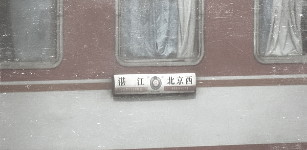

 K158是从湛江到北京西的普快列车，可K157则是从北京西到湛江的回程。 这趟列车在我上大学的那年开通，当时历程是44个小时，后来提速一次到36个小时，时间虽然久，但也免去了我前辈们还要到别处转车去北京的痛苦。我从上大学到现在将近乘坐了30次左右，每一趟行程2764公里，算起来光坐这个列车已经带我走了8万多公里，足以环球旅行绕赤道两圈。当然这比他人真正的环球旅行逊色多了，但它是我的重要人生旅行。 36个小时的长途旅程，会比短途旅程发生更多故事。比如幸福的：当时年轻力壮的我的同学，曾一路不断给身边无座的大学女生让座，到终点站时便已经收集了十几个QQ号。比如尴尬的：有一同学一路跟对面的男人高谈阔论，结果最终巡警逮捕了那位小偷，幸好没把他当作同犯。比如悲惨的：春运期间车厢挤得满满的，我们曾20个小时不吃不喝不上厕所。 我第一次和我爸坐这趟车的时候，对面的阿姨就说：“这孩子太过安静了”。但长时间在狭小的空间，安静的人也会尝试相互聊天打发时间，于是我在这趟列车上也认识了不少朋友。01年身边座位的女生，独自一人从广西去东北见网上认识的男朋友，我问她不害怕被骗么。某年暑假一位北京的美女姐姐自己去海南，估计早就憧憬着南方炎炎夏日，穿着小背心小短裤，结果没想到空调车到了夜里冷得慌，她只能拿塑料水壶不断打热开水，然后在身上一遍遍地烫。还有那次5,6个校友晚上一起讲鬼故事，一个小师妹无意提到我离世的好友，让我一时恍如隔世。还有我在车上认识的我姐，某年春节给了我红包，一时间我觉得真的是亲姐。 K158从南向北经过好几个省，还有长江，黄河。要是到了冬天，这一路能让你明显感觉南北方景色的变化。很多城市，我经过了非常多次，但真正下来看看的没几个。所以当我们在郑州黄河风景区看着飞驰在黄河铁路上的列车时，就像看着自己逝去的青春。